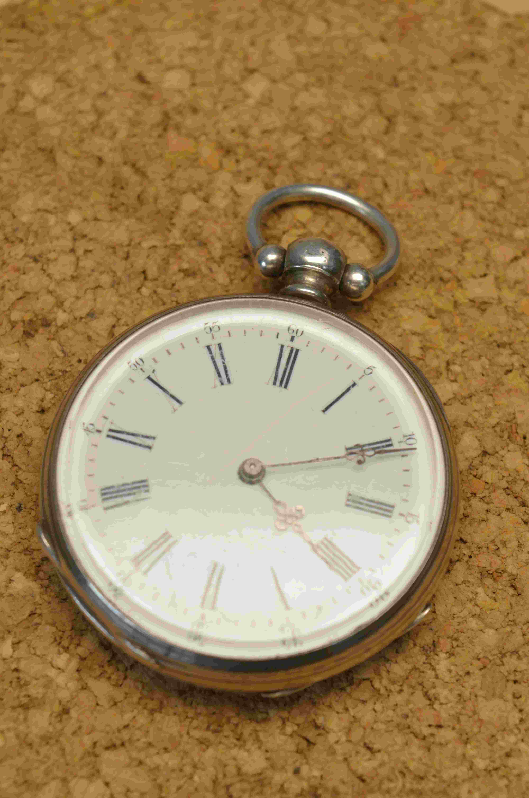
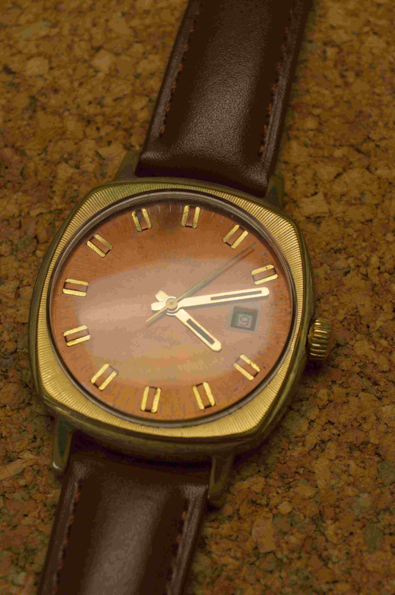
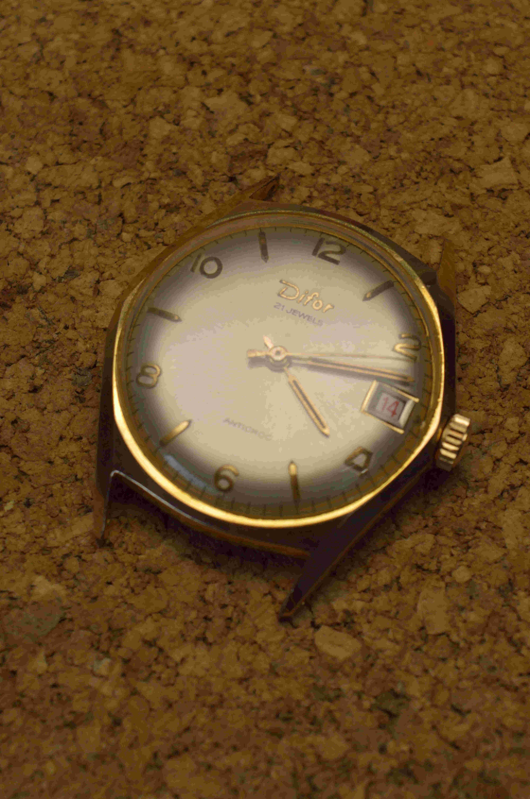
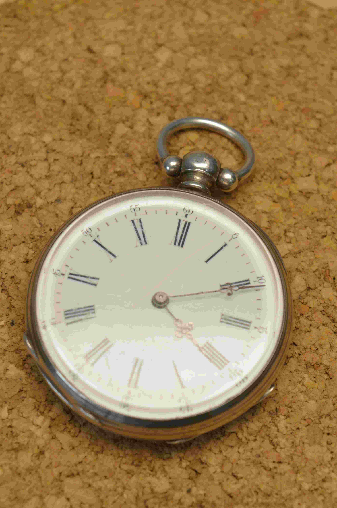
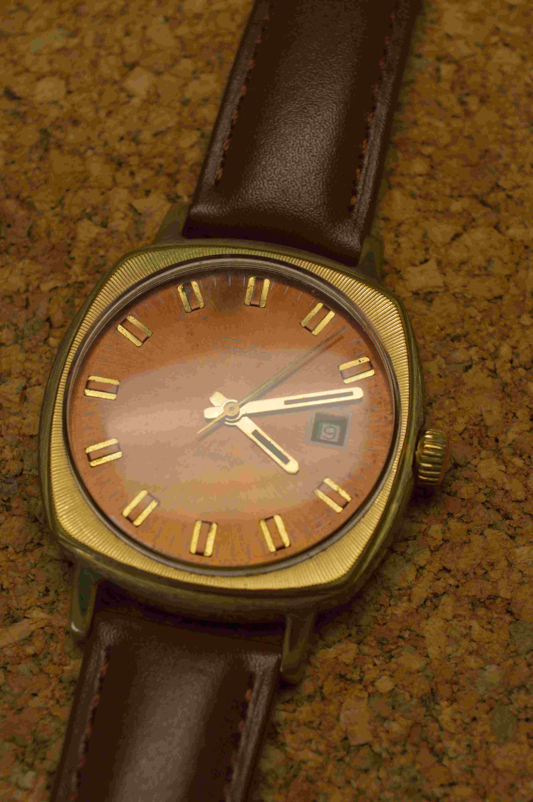
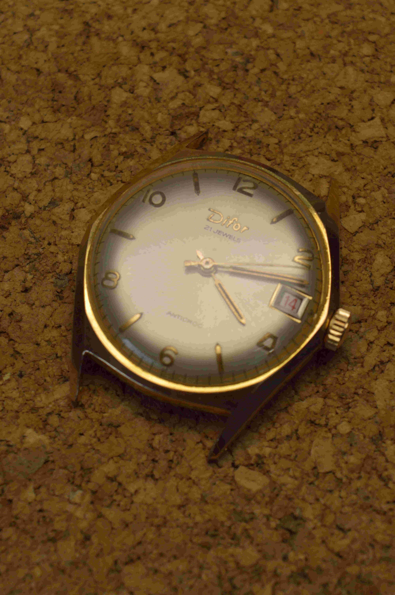

Horlogerie Haratyk
Artisan horloger

Passionné de mécanique, de modélisme et de restauration d’objets anciens, je suis aujourd’hui artisan horloger à Marcq-en-Barœul, dans la métropole de Lille. Après un apprentissage autodidacte, j’ai été formé intensivement par Samuel Marc, horloger professionnel au Havre. Aujourd’hui, je propose mes services d’entretien et de réparation horlogère, sur rendez-vous, dans la région lilloise.
Je travaille sur toutes les marques et tous les types de mécanismes
Pour les tarifs de révision, je fonctionne sur devis, et ceux-ci sont gratuits.
Je travaille uniquement sur rendez-vous. Vous pouvez me contacter par téléphone ou par mail.
N’hésitez pas à me joindre si vous avez des questions.


 





Je suis basé dans le secteur de Marcq-en-Barœul, près de Lille, et j’effectue également des déplacements à domicile pour le retrait et l’installation de vos pendules.